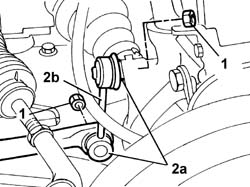

4410C12 Anti-roll bar JOINT - R.R.
- Path
- Procedures > 44 SUSPENSION AND WHEELS > 4410 FRONT SUSPENSION > 4410C ANTI-ROLL BAR AND MOUNTING STRUTS > 4410C12 Anti-roll bar JOINT - R.R.
- Kind
- repair procedure (removal / refitting; the operation number is the code)
- Applies to
- all engines; all production periods
- Interactive page
- https://sloeber94.github.io/elrnDB-lThss/en/#/177644
Applies to: all engines; all production periods
 Removing
Removing
 Refitting
Refitting- Position the vehicle on a lift.
See in Op. 4450B04 Right FRONT WHEEL (one) - R.R.
1. Undo the nuts fixing the joint to the anti-roll bar and to the selector fork.
2. Separate the track rod ends (2a) from the anti-roll bar and from the housing in the selector fork, then remove the joint (2b).

Applies to: all engines; all production periods
Refitting
Removing- Fit the joint fitting the two ends in the housing in the anti-roll bar and in the selector fork.
- Tighten the fixing nuts to torque.
 | Value - daNm | Fastening | Component | Ø |
|---|---|---|---|---|
. | 5.5 | Nut | FRONT ANTI-ROLL BAR JOINTS | M10 X 1.25 |
| Value - daNm | Fastening | Component | Ø |
|---|---|---|---|---|
. | 5.5 | Nut | FRONT ANTI-ROLL BAR JOINTS | M10 X 1.25 |
See in Op. 4450B04 Right FRONT WHEEL (one) - R.R.
- Remove the vehicle from the lift.